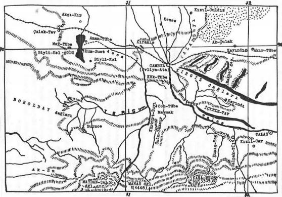

Manas destanı, Türk mitolojisinin bir parçası (épisode) olabilir mi? Bu konu, bizi en fazla meşgul eden bir mesele olmuştur. Manas destanı, Orta Asya’da geniş bölgelere yayılmış Kırgız'ların millî destanlarıdır. Bu da Oğuz-Han gibi, Kırgız bölgelerinde yaşamış, Manas-Han adlı bir bahadırın başından geçen şeylerin bir hikâyesidir. Belki de, Türk kavimleri arasında toplanmış en büyük destan da budur. Bu kitapta daima tekrarladığımız gibi, Türk mitolojileri arasında benzer ve birleşik noktalar bulmak bizim tek emelimiz olmuştur. Manas-Han da, Oğuz-Han'ın dünya hâkimiyeti ve dünya devleti ile ilgili amaç ve anlayışını bulmanın imkânı yoktur. Manas, basit bir kabile reisidir. Düşman kabilelerden sığır ve at gibi mallar elde etme, güzel kızlar kaçırma, Manas'ın en büyük öğünme sebepleridir. Çevresi dardır. Yalnızca Talas vadisinin kıyılarına sığınmıştır. Oğuz-Han ise dünyayı zapteden ve Oğuz boylarını bayrağı altında toplayan bir kağandır. Oğuz ile Manas'ı mukayese etmenin imkânı yoktur. Bunun için de Manas destanını, Oğuz efsanesinin bir parçası veya devamı olarak sayamayız. Manas destanı, biraz da Oğuz-Han efsanesini taklit etme yolu ile, Kırgızların kendi dar dünya görüşlerine göre söylenmiş bir bahadırlık hikâyesidir. Şu halde Manas destanının bu kitapta bir yeri olmamalı idi. Kırgızların dünya görüşü dardır. Fakat bunlar da Türk kavimlerindendirler ve Türkçenin bir lehçesini konuşurlardı. Bütün dünyadaki Türkler gibi, diğerlerine yanaşık destan anlatma üslûpları ve deyimleri vardı. Bu destanda geçen an'aneler, dünya görüşleri, türlü şeyler hakkındaki inanışlar diğer Türklerinkilerle benzerlik ve hatta birlik gösteriyordu. Bu sebeple biz bu kitapta, Manas destanının dış yapısından ziyade içindeki hayatı incelemeğe ve diğer Türklerinki ile benzerlik bulmağa çalıştık. Tabiî olarak araştırmamız çok derin ve geniş olmadı. Çünkü böyle bir kitapta Manas destanına daha fazla yer ayıramazdık.
Ruslara göre Kırgızlar, başkaları ile bir ilgisi bulunmayan müstakil bir kavim ve bir devlettir. Bu bakımdan Jirmunskiy'in başkanlığında neşredilen Manas destanı hakkındaki araştırmalar bizim için faydasız kalmıştır. Bu kitapta, Manas destanının türlü söylenişleri ve farkları hakkında önemli bilgiler verilmiştir. Fakat bizim gayemiz, yapmacık Kırgız Cumhuriyetinin değil; Türk kavimlerinin mitolojisini incelemektir. Bu gayeye ise bu koca kitabın hiç bir yerinde rastlamamaktayız.
Manas Destanı, Kırgızların millî destanıdır. Bu destan üzerinde, çok şey söylenmiş ve yazılmak istenmiştir. Fakat biz bu eserimizde, Manas Destanı'nı daha başka bir gözle ele aldık. Manas'ın hayatı, esas itibariyle Talas nehrinin kaynaklarını teşkil eden, Talas Ala-Dağları'nda geçmişti. Batıda Oğuzların yurdu Karaçuk-Dağı ve doğuda da Alma-Ata'ya kadar uzanan Çu vadisi ve Isığ-göl, onun at oynattığı yerler olmuştu. Bu bakımdan Manas Destanı'nı biz, bir nevi Oğuz-Destanı'nın bir devamı olarak alıp, bu görüşe göre incelemeğe çalıştık. Ruslar, bu destanı bir kaç defa neşretmişler ve bazı fikirler ileri sürmüşlerdi. Bütün bu çalışmalara rağmen, destanın en orijinal metni yine de Radlof'un topladığı parçalar (episodes) olarak kalmıştır. Biz bu kitaba Manas destanından örnek olarak parçalar alırken, başlıca iki prensip güttük. Birincisi, Kırgızca metinlerin aynen tercümeleri. Bu tercümelerde, hatta şiir halinde bile, metne son derece sadık kalınmak istenmiştir. İkincisi de özet halinde verilen parçalardır. Fakat bu parçalar seçilirken, olayların seyrinin kaybolmamasına da dikkat edilmiştir. Manas destanı, çok uzun bir destandır. Bu sebeple destanın tam olarak bu kitap içine alınmasına imkân yoktur. Burada güdülen gaye, özünü bozmadan, Türk okuyucusuna bir fikir vermek ve Türk Mitolojisinin önemli bir kısmı olan bu bölümü de tamamlamaktır. Parçaları seçerken, bu metinlerin çok orijinal, eski ve aynı zamanda Türk adet ve inanışlarını da yansıtmış olmasına, son derece dikkat ettik. Rus Çarını metheden veya zaman zaman Çarla ilgili sözler söylenen uzun bölümlerin buraya alınmasında hiç bir mana yoktu. Bunlar, sonradan ilâve edilmiş bölümlerdir. Rusların yayınladıkları Manas destanlarında ise, daha ziyade bu bölümlere önem verilmiştir. Biz ise, Türk dinini, inanışlarını ve toplum hayatını yansıtan, Türk mitolojisinin gerçek parçaları olanları aradık. Bu sebeple şimdiye kadar yapılan yayınlarla, bizim araştırmamız arasında büyük bir ayrılık vardır. Manas’ın gerçekten yaşayıp, yaşamadığı meselesi ile aynı destanda geçen yer ve kişi adları, ayrı bir bölümümüzde incelenmiştir.
Manas Destanı'nı, Oğuz destanı ile mukayese etmek elbette ki büyük bir metod yanlışlığı olur. Oğuz destanı, büyük dünya devletleri kurmuş, gerçek devlet hayatını yaşamış, yaşatmış ve öğretmiş bir millete veya kavme aittir. Manas destanı ise, henüz daha iptidaî bir göçebe hayatı yaşayan, büyük devlet hayatı yaşamamış, dünya hakkında bilgi ve görüşleri çok az olan bir Türk kavmine aittir. Bununla beraber, destanın plânında, sık sık Oğuz destanına özenildiği de gözden kaçmamaktadır. Fakat görüş sahasının Urum ve Kırım'ın ötesine aştığı pek görülmez. Urum ve Kırım diyarları da, destanda sembolik olarak geçerler. Yoksa Manas'ın ayağı o diyarlara değmiş bile değildi. Batıda Buhara ve doğuda Turfan da, yalnızca, birer coğrafya sınırları olarak, örnek şeklinde verilen şehir adları idi.
Manas'ın bir Han olarak özellikleri: Destanda Manas'ın adı çoğu zaman, Manas, Er-Manas ve bazen de çok az olarak Manas-Han şeklinde geçer. Kırgızların Orta-Yüz reisi Kökçe-Han'a çoğu zaman "Han" unvanı verildiği halde, Manas'tan bu esirgenir, Yukarıda da söylediğimiz gibi Manas, Oğuz-Han gibi büyük bir devlet reisi ve dünyalar fatihi değildir. Normal insanlar gibi galip gelir, mağlûp olur, yaralanır, zehirlenir ve ızdırap çeker. Destanın baş kısımlarında birçok yerleri elde edeceğinden söz açılırsa da, Manas'ın hayatı çok mütevazı geçmiştir. Belki de destanın bu kısımları kaybolmuştur. Manas'ın kendisi çok alçak gönüllüdür. Kendi konuşmalarında, birçok ülkeler zapt etme gaye ve isteğine pek rastlanmaz. Onda büyük bir devlet kurma ideali de yoktur. O, yalnızca günlük işlerle meşguldür. Sık sık, akın yapacağı ülkelerden bahsederken, alacağı atlardan, develerden ve güzel kızlardan söz açar. "Devletin temeli topraktır". Onda, toprak alma ve iline katma isteği de görülmez. Önceki iki karısını da, yine düşmandan ganimet yolu ile almıştır. Ulu-Hatun'u Kanıkey-Hatun ile ise, görücü yolu ile evlenmiştir. Evlenmesi, bu bölümde kısmen normal bir yol takip eder. Bu sebeple bu kadın, destanda ve Manas'ın hayatında çok önemli bir rol oynamıştır.
Yukarıda da söylediğimiz gibi, Manas'ta büyük bir "Han özelliği" yoktu. O gider, kendisine baş eğen kabilerle yemek yer, kölelerle aynı sofraya oturur ve bu sebeple de Kara-başlı bu halklar, onu zehirlerler veya yaralarlardı.
Batıdaki sınırı, belki de Karaçuk dağına kadar uzanıyordu. Nogay Han'ı Yoloy-Han'la yaptığı bir harp dolayısı ile Sir-Derya'nın adı bir defa geçer ve metinlerde bir daha da görülmez. Bu sebeple bu bölgelerin, Manas'ın sınırları içine girdiği şüphelidir. Destandan anlaşıldığına göre, doğuda Kulca ve güneyde de Hokend'e kadar inmişti. Fakat Hokend'in onun egemenliği altında bulunduğundan, hiç söz açılmıyor. Zaten Manas'ın belirli devlet sınırı yoktu. O, daima akın yapan ve bu akınlarla kendisine ve adamlarına menfaat toplayan bir reistir.
Manas, "Müslümanlığın bir sembolüdür". Müslümanlığın yayılması için, çok parlak vuruşmalara girmiş ve harpler yapmıştır. Fakat bu harplerin ne kadar tesirli olduğu ve hangi kavimleri Müslüman ettiği destanda pek görülmüyor. Bu sebeple, Müslümanlığın yayılışında büyük bir tesiri olduğu söylenemez. Gerçi Kös-Kaman gibi bazı Kalmuk reisleri ona sığınarak Müslüman olmuşlardı. Fakat sonunda onunla vuruşan ve hatta Manas'ı zehirleyenler de, yine bu sözde Müslüman Kalmuklar olmuşlardı. Esasen bu Kalmukların İslamiyet’i kabul etmeleri de yine bir zorunluk altında olmuştu. Çocukları, diğer Kalmuklar tarafından kaçırılınca Manas'tan yardım istemişler ve Manas da onlara yardım etmeği reddetmişti. Sırf Manas'ın desteğini bulmak için, bu Kös-Kaman Kalmukları gelerek Müslüman olmuşlardır. Bunlardan da anlaşılıyor ki, Manas'ın İslamiyet’in yayılışında da önemli bir rolü olmamıştı.

Harita 5: Manas Destanlarında çok geçen Talas ve Teris nehirleri boyları
Manas doğduğu zaman, "eti ap ak ve kemiği de sanki bakır gibi" imiş. Kemiğinin bakır'a benzetilmesi, Türk mitolojisi bakımından önemlidir. Meselâ, Güney Sibirya efsanelerinde, "yarısı altın, yarısı da gümüş doğan çocuklara" rastlıyoruz.1149 Manas doğarken, elinde bir "kan pıhtısı'' tutarak doğmuştu. Bu kan pıhtısı tutma motifine, Manas destanının en orijinal kısmı sayılan ve biraz sonra tercümesini vereceğimiz bölümde pek rastlanmıyor. Bu motif daha ziyade, sonradan ilâve edilmeleri çok muhtemel olan, Manas’ın oğul ve torunlarına ait bölümlerde görülüyor. Bu bölümün Kırgızca metnine oldukça yakın olan tercümemizi aşağıya veriyoruz:1150
"Ormanlarda büyüyen, ayılarla, boğuşan
"Birden yolunu kesen, çöl parsıyla baş çıkan,
"Akreb gözlü Er-Manas, çok iri vücutluydu,
"Bir kubbe yanı gibi, büyük görünüşlüydü.
"Er-Manas doğar iken, herkes şaşırmış idi,
"Kanlı elini gören, aklın kaçırmış idi.
"Bir kara kan parçası, sağ avcunda var idi,
"Bir koyun bağrı kadar, bir kanı tutar idi.
"Kaşları çatık, çatık; göz üstü büyük idi,
"Gözleri kızıl, kızıl; yüzü de gömgök idi.
"Büyük aşık kemikli,
"Yakup-Bay'ın öz oğlu,
"Asil doğan Er-Manas."
Manas'ın bu doğum şekli üzerinde Çingiz-Han ve Devleti’nin tesirleri açık olarak görülmektedir Manas destanının baş kısmında bunları görmüyoruz.
Manas'ın gözlerinin akreb (Çayan) gözlerine benzetilmesinin ikinci bir paralelini Türk Mitolojisinde şimdilik bulamadık. Gözlerinin kızıl ve yüzünün (önggü), boz (sas), gök olması da Oğuz destanının açık bir tesiridir. Öyle anlaşılıyor ki, Manas destanının bu parçası Çingiz ile Oğuz illerinin inanışlarını bir araya toplamıştı.
Boy ve cüssesinden de bahsederken, Anadolu'da da kullanılan, "yarım-kubbe" deyimini hatırlatan bir ifade kullanılıyor.
"Elinde kan tutarak doğma" motifini, yine aynı Manas destanının içinde ve başka bir münasebetle de görüyoruz. Başka bir aileden iki çocuk doğuyor. Bu çocuklardan birisi doğarken elinde "kül" tutuyor ve diğeri de "kan" tutuyormuş. Bunun için, adları da Kül-Çora ve Kan-Çora olmuş. Fakat önemli olan nokta şudur. Efsanede Kül-Çora, "iyi, sadık ve kahramanca" bir hayat göstermiştir. Herhalde buradaki kül "ateş'in bir sembolü idi. Kan-Çora ise hayat boyunca, "kötü, hain ve sadakatsiz" kalmıştır. Bu da gösteriyor ki elinde kan tutarak doğma, Kırgızların yerli bir inanışları değildi. Çünkü yerli inanışta böyle bir doğuş, iyiliğe alâmet değildir.1151
Çingiz-Han da doğarken, elinde saka kemiği büyüklüğünde bir kan parçası tutarak dünyaya gelmişti. Olay, şöyle olmuştu:
"Çingiz-Han’ın babasının adı, Yesügey idi. Önceleri Tatar kabilelerini mağlup etmiş ve onların reisleri Temücin-Üge ile Kuru-Buka'yı esir almıştı. Dönüşünde Deligün-Boltak dağında konakladı. İşte bu sırada, kutsal kahraman (Çingiz-Han) doğdu. Doğarken, elinde pıhtılaşmış bir kan parçası tutuyordu. Büyüdükçe de kutsal belirtiler göstermeğe başladı. Bu çocuğun doğumu, Tatar reisi Temücin-Üge'nin esir ediliş zamanına rastladığı için, ona Temücin adı verildi.1152 "
Tatar reisi Temücin-i-Üge'nin adı Türkçedir. Temücin adı tefsir ve münakaşa edilse bile Üge unvanı, Uygurların çok tanınmış unvanlarından biridir. Çin kaynakları da, "Çingiz-Han’ın sağ elinde, kırmızı taşa benzer bir kan pıhtısı ile doğduğunu" yazarlar. Çingiz- Han'ın babası Yesügey, oğlunun elinde kan pıhtısı olarak doğduğunu görünce, bu çocuğun büyük bir savaşçı olacağını söyler ve ona esir ettiği düşmanlardan birinin adını verir. Bu ad verme olayında, fevkalâde bir inanış ve âdetin tesirlerini aramağa lüzum yoktur kanaatındayız. Çünkü fevkalâde iptidaî ve sefil yaşayan Çingiz-Han'ın babası, daha güzel bir ad bilmiyordu.
Üstad Pelliot, elde kan tutarak doğma inanışının bir Hint adeti olduğunu söylüyor. Üstad, iyi bilmediği şeyi söylemez.
Manas'ın Kırk-Yiğidi: Dede Korkut kitabındaki Oğuz Beylerinin Kırk-yiğidi, Türk mitolojisinin hiç kaybolmayan ve değişmeyen bir motifidir. Avrupa hukuk tarihinde, böyle bir mâiyete "Comitatus" deyimi kullanılırdı. Her kahraman ve cesur kişinin böyle bir mâiyeti vardı. Çingiz-Han'ın "Dört-köpek" i de bu seridendir. Yalnız, Çingiz- Han'ınkilerle bunlar arasında bir fark vardır. Çingiz-Han, başlangıçta yalnızca bir eşkıya idi. Hâlbuki Kırk-yiğid sahipleri, boylu soylu il beyleridir. Nitekim Çingiz-Han'ın da bu dört köpeğinin adları, herhalde Türk âleminden utanılmış veya Türklere özenilmiş olacağı için sonradan, "Dört-Külüg" e çevrilmişti. Fakat üstad Pelliot'nun da dediği gibi, bu Dört-külüg adı, önceleri hiç yoktu. Sonradan uydurulmuş bir efsanedir.
Kırk-Yiğid arasında da, bir hiyerarşi ve rütbe sırası vardı. Meselâ bir Han oğlu olan Alman-Bet'le vezir Bay oğlu Bakay, Uygurların Ayguçı dedikleri müşavir Acı-Bay, bunların başında bulunuyorlardı. Bu sebeple bunlar asil ve soylu alplerdi. Temir-Han'ın Yoro dediği mâiyeti bunlardı. Diğerleri için ise, Manas destanı her yerde Çoro/Çora unvanını kullanıyordu. Bu Çora'lar, bir işçi veya hizmetçi durumunda idiler. Nitekim Alman-Bet bir kavga sırasında, Kırk-yiğid'den biri olan Serek!i yaralamıştı. Serek, giderek bunu Manas'a şikâyet etti. Manas da ona cevap olarak : "O, Han oğludur. Seni yaralayabilir," dedi. Ondan sonra da Serek'in gönlünü almak için, yanına aldı ve beraberce ziyafete gitti.
Manas Destanında, Dede-Korkut masallarında geçen Kırk-Yiğit'le ilgili bazı olaylara da rastlıyoruz: Alman-Bet, babası Kara-Han'ı Müslüman olmuyor diye öldürdükten sonra, Kırgızların Orta-Yüz reisi Kökçe-Han’n yanına gelmişti. Kökçe-Han'ın Alman-Bet'e çok itibar ve saygı göstermesi, Kökçe'nin Kırk-yiğid'ini kızdırdı ve kıskandırdı. Onlar da aralarında toplanıp, "Bu Alman-Bet'in üzerine bir iftira atalım da onu ortadan kaldıralım" diye bir karara vardılar. Bunun üzerine, hepsi toplanarak gittiler ve Kökçe-Han'a : "Bu Alman-Bet, senin karınla yatıp kalkıyor," dediler. Bunun üzerine de Kökçe-Han'la Alman-Bet'in arası açıldı ve Manas'ın yanına gitmeğe mecbur kaldı. Kökçe'nin Kırk-yiğidi dertleşirken, tıpkı Dede-Korkut’taki gibi, "Bu kâfir bizim üstümüze çıktı," derler.1153
Manas ile Kırk-yiğidi arasındaki arkadaşlık, bir devlet idaresini paylaşma veya bu gayeyi gütme için müşterek bir savaş ve askerlik düzenine dayanmaz. Bu anlaşma daha ziyade, menfaat, yağma esası üzerine dayanmıştır. Bu sebeple Oğuz-Destanı ve hatta Dede-Korkut'la, aralarında büyük bir ayrılık vardır.
Meselâ Manas bir defa zehirlenerek ölmüş ve mezara gömülmüştü. Manas sonradan Tanrının emri ile dirilmiş ve babası, annesi ile kırk yiğidi onu mezarda namaz kılarken bulmuşlardı. Fakat Manas, "Ben değiştim, bambaşka oldum," diye onlardan hiç birini tanımamıştır. Bu sırada Kırk-yiğid'den biri olan Serek, onu uyarma için şöyle bir konuşma yapmıştı:1154
"Sen, babanı bilmedin! Sen, anneni bilmedin! Kırk-Yiğidin bilmedin! Bakay'ı unuttun mu? Altmışaltı sürülük, sığırın unuttun mu? Sığırlarını güden, kıyametlik yoldaşın, can dostun Kara-Toko, aklında mı, ey Manas!"
Bu konuşmadan da açık olarak görülüyor ki bu arkadaşlık bağları, maddî ve geri zihniyetten kurtulup, henüz daha diğer Türk cemiyetlerinde olduğu gibi yüksek bir toplum hayatına ve şuuruna kavuşmamıştı.
Manas Destanında Kırk-yiğid, Manas'a olduğu kadar, karısı Kanı- key-Hatun'a da çok bağlıdırlar. Bu hatun gelin geldiği zaman Manas'ın Kırk-Yiğidi: "Bu gelin, nasıl gelinmiş," diyerek hemen "ellerini yüzlerini yıkayıp", gelini ziyarete gelmişler. Gelin de onlara pek çok hediyeler vermiş, saygı göstermiş, iltifatlar etmiş. Bunun üzerine de Kırk-Yiğid: "Biz şimdiye kadar hiç böyle gelin görmedik," diyerek sevinmiş gitmişler. Fakat burada önemli olan nokta şudur: Kırk-Yiğid, ellerini ve yüzlerini yıkamadan, temizlenmeden, gelinin karşısına çıkmamışlardı.1155
Aynı şekilde Kanıkey-Hatun, yani Manas'ın baş hatununun, babasının evinde Kırk-Kız'ı vardı. Bunlar da Han kızının maiyeti idiler. Manas'ın adamları bu Kırk-Kız'ı yakalayıp götürünce, Kanıkey de arkadan şöyle bağırmış: "Durun kızlar! Kırk-Kız'ın başında da bir soylu gerek!" Demiş ve o da onlara katılmıştı.
Göktürk yazıtlarında da, böyle devlet kuran, meselâ İl-Teriş Kağan'ın 17 kişilik mâiyetine, Eren deyimi kullanılırdı. Sonraki Türk metinlerindeki Alp-Erenler deyimi de, bunun bir devamıdır. Manas destanında da, zaman zaman Çoro/Çora deyimi yerine Eren deyimine rastlıyoruz. Bu Eren'ler, yurd içinden seçilerek alınıyordu.1156 Bu seçimde de kişilerin sahip oldukları kabiliyet rol oynuyor ve soylu olmağa önem verilmiyordu.
Han'ın yanında bulunan böyle büyük ve akıllı yiğitler, Allah tarafından verilmiş bir nimet bir yardımcı gibi kabul ediliyorlardı. Bu sebeple, bu yiğitlerin soylu olmamalarına rağmen toplum içinde büyük önem ve değerleri vardı.1157
Sibirya ve Altay destanlarının çoğunda kızların, Kırk-kız'dan meydana gelen mâiyetlerini görüyoruz. Pek az olmakla beraber, bu kızların yanında Kırk-Yiğid'le Kırk-Kız ve kazan da Otuz-Kız bulunurdu.1158
Manas Destanındaki bu Kırk-yiğid, yeri gelince de Manas'ı "Begim" diye çağırıyorlardı.1159 Manas'ın kırk yiğidinin adlarından, kişi adları ile ilgili bölümde söz açacağız. Ancak Manas'ın yiğidlerinin özelliklerini gösteren şu parçayı da buraya almadan geçemeyeceğiz.1160
"Kırk-yiğidin başı Kırgıl. Yedi yemeği birden içen Bos-Çolok ile Çalbay. Yelbegey ve sen, Sırak. Kök-Şebiç ve sen, Seräk. Benim kurnaz genç yiğidim, Kutunay. Benim kötü yiğidim, Kulyagan. Benim genç çocuğum, Yayma-Kökül. Sen, ey Bay'ın oğlu Bakay. Ak-Boltong'un oğlu Bolot. Arkadaşım Bauke. Sen, ey benim, Yaysan. Soylu ailelerin çocukları, ey siz! Benim elbisem, sen ey kahraman Bürküt, Benim suyum, sen ey kahraman Sasam. Geriye bile sıçrayan, Kan-Keldi, Kara-Yoltay, Yan-Keldi. Sen ey, benim şarkıcım, Alamandı. Çözülenleri ören, kırılanları düzelten, sen ey keskin dilli Acı-Bay, Kenän'in oğlu. Sen ey, Kenäş oğlu Kan-Canbay. Benim falcım, Kara-Tölök. Kırk yiğidin arkadaşı, Bölök... Kazak'dan gelen Kolman-Bet. Kırgız'dan gelen Yalman-Bet. Kâfir ile Müslümanın yurdunu, ilini kıran, benim savaşçılarım. Kara-Bayır ve Kasalat adlı gençler, siz her şeyde isabetlisinizdir! Gece bile tilkinin izini kaybetmeyen, benim Şuut'um. Genç Tünükey. Yine gece karsak tilkisinin izini bulan, benim kaplan Şuut'um."
Manas destanında, bunun gibi Kırk-yiğid'in özelliklerini sayan birçok parçalar vardır. Fakat bunların hepsini bu kitap içine sığdırmağa imkân yoktur. Bu sebeple bu konuyu, bununla kapayacağız.
Manas'ın diğer özellikleri: “Bazı yerlerde Manas için: "Kaplan doğan Er-Manas" denir.1161 Onun bu unvanı sonradan açıklanarak, "Kaplan yılında doğduğu için", böyle denmiştir deniyordu. Biliyoruz ki, Alman-Bet'in de lâkabı da, "Kaplan doğan" idi. Öyle anlaşılıyor ki Kırgızlar, bütün büyük kahramanlara bu lâkabı veriyorlardı. Ye yine onlara göre, büyük bir kahramanın "Kaplan yılında" doğmuş olması da, bir şart idi.
Manas, annesinin karnında "On ay" kalmıştı. Alman-Bet ise 12 ay ana rahminde büyüdükten sonra doğmuştu, öyle anlaşılıyor ki, büyük efsane kahramanları, ana rahminde diğer normal insanlara nazaran, daha fazla kalıyorlar, olgunluklarını ve diğerlerine karşı olan üstünlüklerini böyle kuruyorlardı.
"Annesinin tek oğlu" olmak da ayrı bir öğünme sebebidir.1162 Çünkü annesi, bütün varlığını ve kuvvetini tek çocuk doğurmak için sarf etmiş oluyordu. Manas'ın annesinin kanını paylaşan başka bir kimse yoktu.
Manas'ın veziri: Gerek Manas'ın ve gerekse babasının veziri, Bay oğlu Bakay idi. Fakat metinlerde "Bay" sözü, bir özel kişi adı gibi değil de, bir sıfat gibi kullanılır. Bilindiği üzere, bay, "zengin" demektir. Manas ve babası, her sıkıştıkça, Bakay'ı çağırırlar ve ondan akıl sorarlardı. Başta, Manas'ın doğumu ile ilgili efsanede de gördüğümüz gibi, Manas beşikte iken konuşmağa başlayınca, baba Yakup-Han şaşırır ve Bakay'ı imdada çağırır. Han'ın vasiyetnamesini hazırlayan ve kefen ‘ini biçen de yine vezir Bakay'dır. Öyle anlaşılıyor ki, vezir Bakay, devlet içinde yalnız dünya işleri ile değil; öbür dünya hazırlıklarını da kendisi düzenliyordu.
Bay'ın oğlu Bakay için Manas: "Tanrı tarafından bize verilmiş bir dost", diye bahsediyordu. Manas destanının her yerinde, en güç anlarda bile Bakay'a rastlamak mümkündür.
Bir de, "İl’in en yaşlısı" vardı ki, Bakay'dan sonra bu gelirdi. Bu da Koşoy-Han'dır ki, biz metinlerde bunun adını Koşay-Han şeklinde okuduk. Doğru okunuşu da budur. Kabile reisleri içinde en ihtiyar olan, o idi. Kendisi Ala-şan dağlarında ve Kırgızların Sağ-yüz reisi Yamgırçı-Nogay’ın sınırlarında otururdu.1163 Manas ve halkı, hep ona saygı gösterir ve onun sözünü tutarlardı. Kendisi aynı zamanda kutsal bir kuvvete sahip olan bir pehlivan idi. Koşay-Han, tıpkı Han-nâme’de adı geçen 1200 yaşındaki büyük pehlivan ve savaşçı Ulug-Arslan'ın, Manas destanındaki bir paraleli idi. Oğuzların yurdu olan Kazılık vadisindeki Kar-Yabas (Kar yağmaz ?)'da güreşler tutmuştu. İhtiyar ve beli bükük bir halde, genç Nogay Han'ı Yoloy-Han'la bile güreş tutmuş ve onu yenerek Manas'ı şaşırtmıştı. Çünkü Manas, Yoloy-Han'dan korkmuş ve onunla güreşmek istememişti.
"İyi Vezir" in yanında, bir de "Kötü Vezir" vardı ki, bunun da adı, Mengdi-Bay'dı. Nasıl Bakay iyilik sembolü ise, Mengdi-Bay da, kötülük timsalidir. Bu suretle, dinde olduğu gibi, "devlet idaresinde" de bir (Dualism) görülüyordu. Onun için Manas destanında Mengdi-Bay için, "Yakup -Han'ın haram (aram) kulu, kölesi" diye söz açılıyordu.
Öyle anlaşılıyor ki, Manas'ın annesi kısırdı, Bunun için de gerekli tedbirleri almıyordu. Bu sebeple Yakup-Han, karısından şikâyet yolu ile destana başlar: